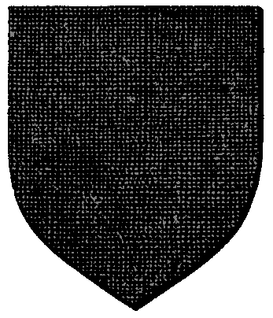

| Übersicht,
Off-Topic |
|
Bogan Feuerherz
|
Gerno Flinklöffel
 |
Wie ich grade erfahren musste ist der Spieler von Bogan am 15.12. verstorben.
Ein paar von uns Alten dürften Hannes ja noch gekannt haben, daher gebe ich die traurige Nachricht auch hier weiter.
Join ya in another time and place Bogan. :( |
23.12.12 23:21

 |
|
Sìn Mortiarea
 |
mir fehlen die Worte, ich wusste dass er gesundheitliche Probleme hatte, aber das
:( |
24.12.12 12:48
|
|
| Gwydion de Ville (RIP) |
Ich hatte das Glück Bogan zwei Mal zu treffen. Einmal auf dem Saartreffen und einmal auf einem Treffen in Aachen. Er war ein netter, lustiger, teils auch abgedrehter Kerl, der es aber Verstand einem ein Lächeln auf die Lippen zu zaubern.
Möge er in Frieden ruhen... auch wenn sein Tod viel zu früh kam. |
24.12.12 16:39
|
|
| Romix Isenerz (RIP) |
uff, das ist bitter zu lesen.
RIP Bogan. |
24.12.12 22:50
|
|
Zorra
 |
Ich werde immer an ihn denken, auch wenn seine Kerze nun erloschen ist.
Haette ich doch mehr Zeit fuer ihn gehabt. Das ist mein bitterer Gedanke grade. |
25.12.12 22:55
|
|
Sethwyn Seitenhieb
 |
Oje, Zorra :(
Ich kannte ihn nicht persönlich, dennoch: mein Mitgefühl. |
01.01.13 2:28
|
|
someone
 |
Mein herzliches Beileid allen Hinterbliebenen die ihn nun missen. |
03.01.13 14:49
|
|
Otin ni Shim
 |
Egal wie oft ich es lese, mir fehlen immer noch die Worte.
Wenn wir immer vorher wüssten wie und wo alles endet wüden wir vieles anders machen. Mach dir keine Vorwürfe Zorra, er hätte es nicht gewollt. Denk lieber an die schönen Zeit mit ihm. |
04.01.13 0:10
|
|
| Bluemchen (RIP) |
Hab ihn mal in Wien gteroffen....... zu frueh fuer den jungen Mann. |
06.01.13 8:30
|
|
| Lorienne (RIP) |
Ich kann es kaum glauben.
Seh ich noch vor mir, als er bepackt mit seinem Rucksack, bei uns eingetruddelt ist um danach mit mir und Gwen zum Saartreffen zu fahren.
Mein Beieid an alle die ihm nahe standen.
|
14.01.13 16:44
|
|
Enigma
 |
Ja viel zu früh, mein Beileid gilt den Angehörigen
*erinnert sich noch an das Münchentreffen als der schlacksige kerle auf dem Sessel eingeschlafen ist*
Hannes, viel zu früh ist deine Uhr abgelaufen, wir denken an Dich.
|
14.01.13 16:50
|
|
Übersicht,
Off-Topic
|